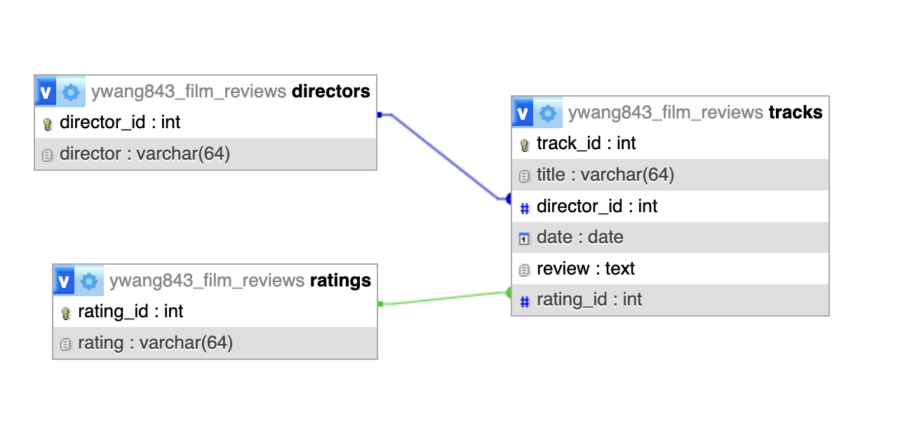

Introduction
Cinema Spectrum is an interactive platform designed to engage movie enthusiasts by providing detailed information, facilitating discussions, and offering user-driven content alongside API-driven dynamic data. The site incorporates advanced web technologies to create a comprehensive and immersive user experience.
Functional Overview
Each page of Cinema Spectrum serves a unique function, integrating different web technologies to provide a comprehensive and interactive experience for movie enthusiasts:
- Discover & Watch: This page offers users a glimpse into the current landscape of popular, trending, and upcoming movies, with data fetched in real-time from The Movie Database (TMDb) API. Users can explore trailers by title using the search functionality. To ensure a seamless viewing experience, an intelligent filtering mechanism prevents the duplication of movies across different categories, such as 'Trending' and 'Popular'.
- Community Reviews: Here, users can actively engage by posting, editing, and deleting their reviews. The page is closely linked to a MySQL database, enabling CRUD operations to manage user-generated content effectively. Pagination is implemented to streamline the presentation of reviews, ensuring optimal performance and navigation. Additionally, users have the ability to add new directors if the current database does not include them. Both frontend and backend validation processes validate user input, guaranteeing the integrity and accuracy of data stored in the database.
- Curator's Corner: This section empowers users to curate their own personalized lists of films, complete with detailed reviews and dynamic management capabilities. Leveraging event-driven DOM manipulation, users can add or remove movie entries in real-time, experiencing immediate visual updates without the need for page refreshes.
CSS Framework
The website utilizes multiple CSS frameworks to enhance its design and functionality. Bootstrap 4 is the primary framework, known for its powerful grid system and responsive features that ensure the website is mobile-friendly and aesthetically pleasing across all devices. It offers a range of pre-built components and utility classes that expedite the development process.
In addition to Bootstrap, the website also incorporates FontAwesome, a popular library for scalable vector icons. FontAwesome allows for the easy integration of icons into the web design, enhancing the user interface with visually appealing graphics that can be styled and manipulated with CSS.
Bootstrap Documentation: https://getbootstrap.com/docs/4.0/getting-started/introduction/
FontAwesome Documentation: https://fontawesome.com/v5.15/how-to-use/on-the-web/setup/getting-started
API Integration and External Resources
The site extensively uses TMDb API to pull real-time data about films, including posters, trailers, and ratings, providing users with up-to-date information and enhancing the user experience with rich media content.
Database
The backend setup involves PHP and MySQL. To ensure a robust user experience, the database contains pre-added movie data, allowing users to perform CRUD operations effectively. This pre-existing data provides users with enough content to edit, delete, and paginate through, as well as the ability to add their own entries.
Database Diagram:

Extras Implemented
- Event-driven DOM Manipulation: This feature allows users to dynamically add and delete film entries within the Curator's Corner section. Through JavaScript, the webpage responds to user actions in real-time, updating the displayed content without requiring a full page reload. This creates a seamless and interactive experience, empowering users to customize their film collections effortlessly.
- JSON / JSONP API Usage: The website leverages JSON and JSONP APIs to fetch movie data from external source, The Movie Database (TMDb). By interacting with these APIs, users can search for movie trailers and explore trending or popular films. This enriches the user experience by providing dynamic content that reflects the latest trends and user preferences.
- Pagination: Pagination is implemented within the Community Reviews section to manage the extensive user-generated content effectively. By breaking down the content into manageable pages, users can navigate through reviews without overwhelming the interface. This enhances usability and ensures a smooth browsing experience, especially for users accessing the site on devices with limited screen space.
- Frontend ↔ Backend Interaction: Although the site does not employ traditional AJAX techniques, it maintains seamless communication between the frontend and backend systems. JavaScript functions send user input to PHP scripts, which handle database operations and return relevant data to the frontend for display. This bidirectional interaction ensures efficient data exchange without requiring full page reloads, contributing to a responsive and dynamic web experience.